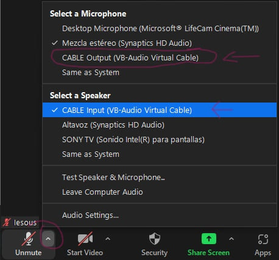

¿Cómo transmitir el audio entre Zoom y Telegram?
Primer paso
Descargar e instalar VB-CABLE. Este software gratuido es un "dispositivo de audio virtual que funciona como un cable de audio virtual. Todo el audio que entra por la entrada del CABLE VIRTUAL simplemente sale a la salida CABLE VIRTUAL".
Después de instalarlo es necesario reiniciar la computadora
Una vez reiniciada la computadora debería salir, en la partede de sonido abajo a la derecha, una nueva opción de la siguiente manera:

Nota:
No es necesario selecionarlo como audio de salida para la computadora porque zoom y telegram lo manejan entre sí.
Segundo paso
Cómo muestra la imagen arriba, en Zoom, se debe cambiar el sonido y el micrófono a las opciones CABLE input y CABLE output
Nota:
Una vez seleccionado Audio virtual CABLE en Zoom Meeting como dispositivos de salida y entrada de sonido no se va a escuchar nada por el altavoz que se usa normalmente; no se va a escuchar ningún sonido de las conexiones de los usuarios porque el sonido va ha estar viajando por el cable virtual, en este caso, con dirección a Telegram.